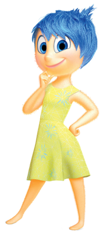
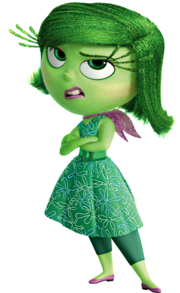
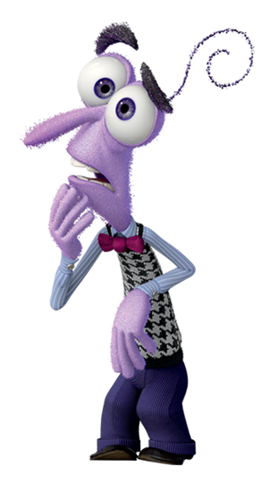

Riley Anderson
A protagonista
Riley Anderson é uma das protagonistas do filme "Divertida Mente".
Ela é a personagem que se passa a história do ponto de vista de suas emoções.
No filme, é contada a história da Riley desde criança até próximo a fase da adolescência.
Emoções da Riley
-
Alegria
 -
Tristeza
-
Raiva
-
Nojinho
 -
Medo 